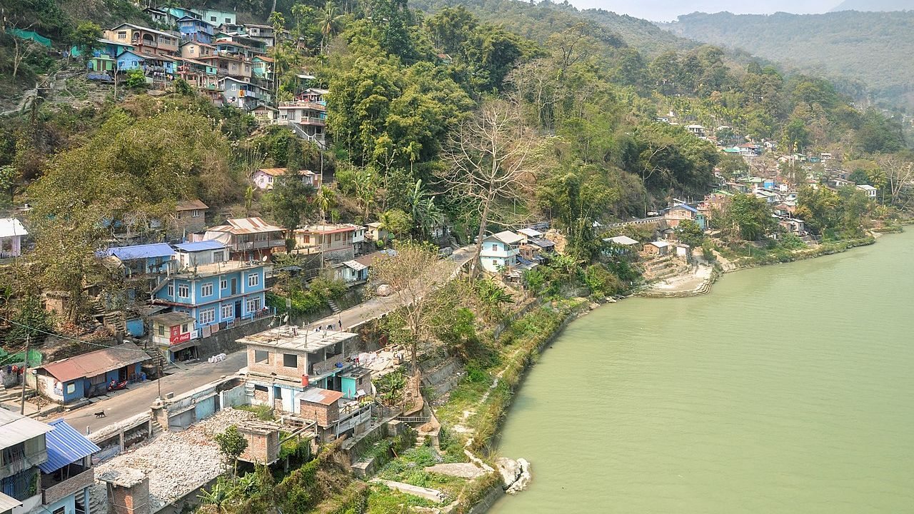
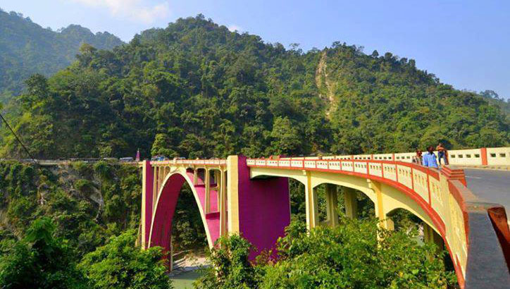
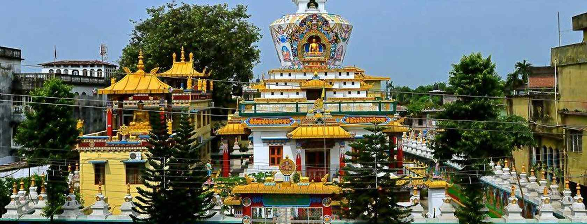

Known as ‘Gateway to North East India’, Siliguri is blessed with a strategic location. This serene city is famous for tea, timber, music scene, wildlife and a monastery (Salugara). It also boasts of multiple tea gardens, and a lush view to calm down your senses. Siliguri is what a doctor would recommend, as an antidote to the hustle and bustle of a metropolis.
Flora:
Siliguri and surrounding Sub-Himalayan forests are rich in fauna diversity, the plains of North Bengal (Siliguri, Jalpaiguri, Cooch Behar etc.) are surrounded by deep forests. These forests are home of various rare and common species of plants. The forest here is moist Tropical and characterised by dense growth of tall Sal i.e. Shorea robusta. Sal occupies about 80% of all vegetation in these tropical forest.
These forests are categorised by their dominating plant species) East Himalayan Sal Forest present on the lower slopes of Mahananda Wildlife Sanctuary contains Sal, Khair, Simul, Sissoo, Riverine grasslands and various rare species of plants like Orchids) East Himalayan Upper Bhabar Sal mainly present at Jalpaiguri district which is characterised by dense population of Microstegium chiliatum, Sal i.e. Shorea robusta. Others are Terminalia tomentosa, Schima wallichii) Eastern Tarai Sal Forest generally found in lower altitudes compared to other two types of forest. This type of forest characterised by various species of bamboos, ferns, and Sal which is found in Baikunthapur Forest, near Siliguri city.
Fauna:
Siliguri is located in the Terai region ("moist land"), a belt of marshy grasslands and dense tropical deciduous moist forests at the base of Himalaya range which is rich in biodiversity, containing numerous rare species of flora and fauna. These forests are characterised by their distinct wildlife variety. Mahananda Wildlife Sanctuary near Siliguri is famous for elephants. Sukna is the gateway to this sanctuary, which is 12 km from Siliguri.
These sub-Himalayan forests are the home of various types of wild animals like the elephant, tiger, Indian bison, barking deer, wild pig, monkey, civet, snake, lizard, mountain goat, sambar, chital and fishing cat. These forests are also home of about 243 different bird species like the pied hornbill, egret, kingfisher, drongo, fly catcher, woodpecker and others. Another common sight is migratory water birds.
Rapid growth of city causing deforestation, making Siliguri warmer day by day and unbalancing the ecosystem.
Best time to visit – January-February
Ideal duration – 1-2 days
How to reach –
By Air: Take a flight to Bagdogra Airport. Alternatively, one can fly to Kolkata Airport (574 km) and take a bus or train from there.
By Train: Siliguri has good train connectivity from all major railway stations.
By Road: One can also avail bus service to Siliguri from Kolkata (558 km)
Location:
Siliguri located at the foothills of the eastern Himalayas at a location of 26.71°N 88.43°E. This city is spread over an area of 260 km2 within the Siliguri Corridor, also known as the Chicken's neck. The city is surrounded by dense forests towards north and lifeline of Siliguri, Mahananda River flows through the city thereby bisecting it into two-halves. Also Teesta river is not so far from the city. Siliguri has an average elevation of 122 metres (400 feet). As Siliguri is located in the Terai region, the soil is sandy in nature i.e. the ratio of sand and silt is much higher than clay. This region is very prone to earthquake as there are several fault lines nearby. The Siliguri subdivision is surrounded by Himalayan ranges towards north and towards south by the country Bangladesh, Uttar Dinajpur district of West Bengal and the Indian state of Bihar. On the east lies Jalpaiguri district and Kalimpong district and bounded on the west by the country of Nepal, thus strategically so important.



Tourism:
Famous for its tea, transport, tourism and timber, Siliguri is located about 80 kilometres from Darjeeling. This picturesque plains town lies on the banks of Mahananda River and the foothills of Himalayas. The hill station’s markets—Sevoke and Bidhan Road—are buzzing with travellers throughout the year. If you are planning a day trip around Darjeeling, you must include Siliguri in your itinerary for its Salugara Monastery, Surya Sen Park, and time your trip to catch one of the town’s famous fairs— Boishakhi Mela, Hosto Shilpo Mela, Book Fair and Lexpo Fair. Perched at an elevation of 2,113 feet, Siliguri is the major transit point for air, road and rail traffic to the neighbouring countries of Nepal, Bhutan and Banglades.
Foods:
Siliguri's cuisine is a veritable mix of various cultures and places. Tourists can pick from cuisines such as Chinese, Bengali, Mughal and South Indian, depending on what one wants to eat. There are plenty of sweet shops scattered all over the city, so if you have a sweet tooth, don?t forget to try out the plethora of Bengali sweets available in the town.
A large Tibetan and Nepali population reside here and therefore, momos and Thukpa can be found commonly as street food.
Since it is only a transit town, there is not much to be expected in terms of quality of food but you do get a lot of variety. Non-vegetarians will find an entire host of options here as Red meat, birds, pork, fish, mutton, and seafood items are commonly eaten and therefore available in many eateries. Potoler Dorma (meat stuffed gourd), Bhapa Ilish (steamed Hilsa fish), Chital Muitha (fish koftas), Chital Kaliya ( a gravy based fish dish) give some spicy and delightful food choices to non-vegetarians.
Vegetarians options are also available in Bengali cuisine such as Pumpkin Bhujia (deep fried gram flour coated Pumpkin slices). Vegetarian Indo-Chinese dishes such as Chowmein are commonly available. Vegetarian momos, Thukpa, and common North Indian vegetables along with rice give a varied meal choice to vegetarians.
Food is an inseparable element of culture! And if you love getting close to the cultural side of the destinations your visit, knowing and tasting the food dishes of those places would certainly help. Here are some of the most loved Siliguri food that you must also taste to know the heart of the city:
Potoler Dorma (meat stuffed gourd)
Bhapa Ilish (steamed Hilsa fish)
Chital Muitha (fish koftas)
Chital Kaliya ( a gravy based fish dish) give some spicy and delightful food choices to non-vegetarians.
chilli chicken, chilli prawn, chicken tai pai, shanghai roll, fried wontons, spring roll, ching kao or steamed dumpling
Sweets(barfi, or a fudgelike sweet with silver coating and laddoo or sweetmeat balls prepared with gram flour).